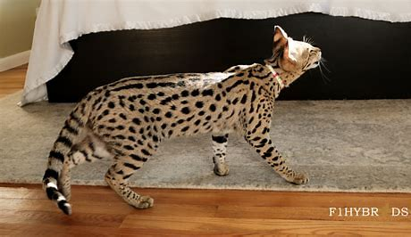
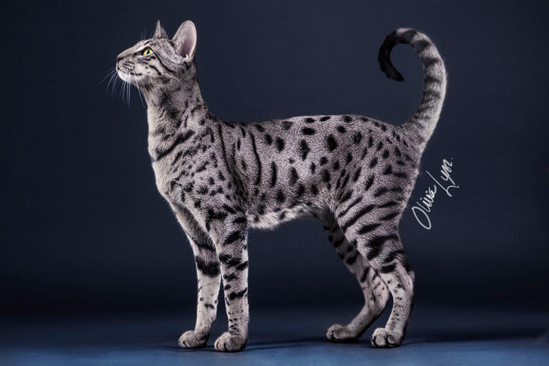
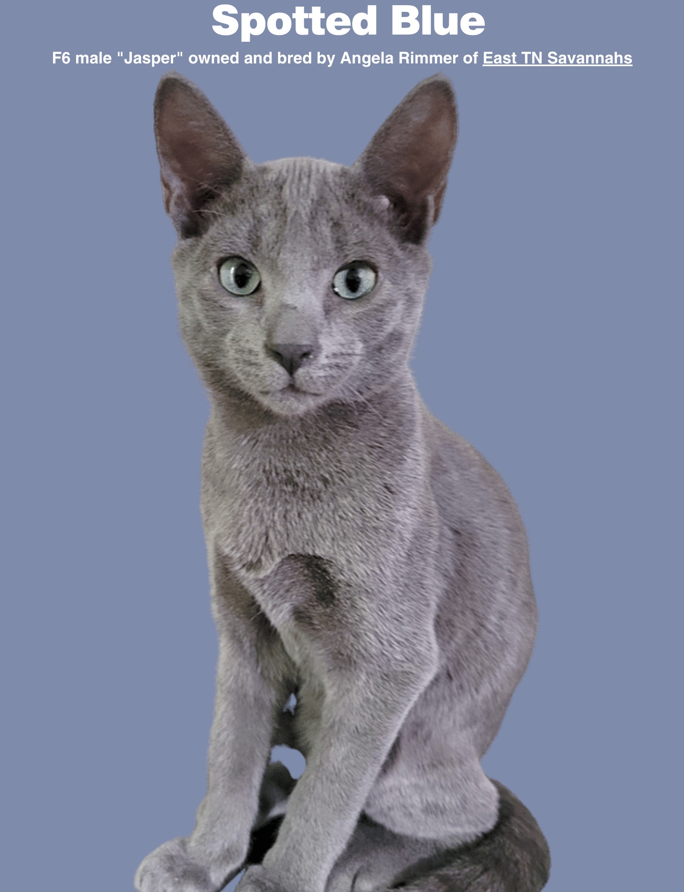

Savannah Cats: Colors & Patterns
Golden Savannah Cats
Based on color
Golden Savannah cats are known for their striking coat, which often features a rich, golden hue that glows in the light. This golden tone is one of the most sought-after colors in the breed, giving the cat a wild, exotic look reminiscent of its African Serval ancestry. Their fur typically has a warm, golden base overlaid with bold black or dark brown spots, creating a vibrant contrast. The spots are randomly distributed, giving each cat a unique pattern much like a leopard’s. The golden color can range from a soft, sandy gold to a deeper, more vivid tone, depending on the generation and specific lineage. Their coats are short, sleek, and slightly coarse to the touch, enhancing their athletic appearance. This beautiful coloring not only adds to their visual appeal but also highlights the breed’s hybrid roots. Golden Savannahs often look like miniature cheetahs, making them especially captivating to cat enthusiasts.
Silver Savannah Cats
Based on color
Silver Savannah cats have a stunning, icy-toned coat that sets them apart from other color variations in the breed. Their fur typically features a pale silver or cool white base with sharply contrasting black or charcoal spots. This combination gives them a sleek, high-contrast appearance that’s both elegant and wild. The silver coloring comes from a dilution of the warmer tones found in other Savannahs, resulting in a more ethereal, almost metallic look. Their nose leather, paw pads, and eyeliner-like markings are often dark, which enhances the dramatic effect of their coat. The cool tones of the silver coat highlight their lean, athletic build and exotic features. Depending on the lighting, the silver can shimmer slightly, giving these cats a luminous, captivating quality. Silver Savannahs are prized for this unique coloration, making them a favorite among fans of rare and visually striking cats.
Solid & Spotted Savannah Cats
Based on pattern
Savannah cats come in both solid and spotted patterns, each offering a distinct and eye-catching look. The spotted variety is the most iconic, featuring bold, dark spots scattered across a contrasting background coat. These spots can be round, oval, or elongated, and are often compared to those of a cheetah or leopard, emphasizing the breed’s wild heritage. The spacing and size of the spots vary, giving each cat a one-of-a-kind appearance. In contrast, solid Savannahs have an even, unmarked coat that may appear in shades like black or smoky gray, lending them a sleek, panther-like elegance. While they lack the dramatic spotting, solid Savannahs still retain the exotic body shape and facial markings typical of the breed. Both patterns can appear in different colors, but it’s the layout of the coat that defines the visual impact. Whether spotted or solid, Savannahs carry an unmistakable air of mystery and grace.